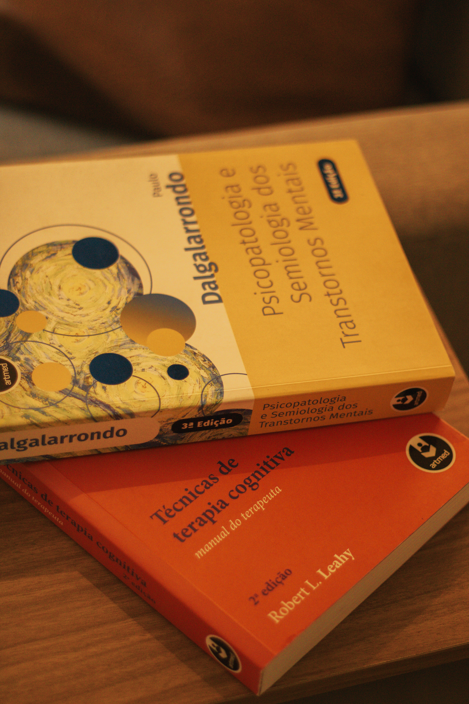

Um espaço ético e acolhedor para compreender suas emoções, identificar padrões de pensamento e comportamento que dificultam o seu bem-estar e desenvolver estratégias e habilidades para lidar com os desafios da vida de forma mais saudável.
Você se identifica?
Muitas pessoas chegam à terapia carregando pesos que parecem impossíveis de nomear. Você não está sozinho.
Ansiedade constante que não te deixa descansar nem se concentrar no presente
Dificuldade de reconhecer, nomear e expressar o que sente
Esgotamento emocional e sensação de sobrecarga no dia a dia
Autocrítica excessiva e dificuldade de reconhecer o próprio valor
Desequilíbrio entre vida pessoal e profissional, sem saber como mudar
Dificuldade de tomar decisões e definir o que realmente quer para a sua vida
Sobre mim
Sou Thaís, psicóloga com atuação em Terapia Cognitivo-Comportamental (TCC). Atendo jovens e adultos que desejam compreender melhor suas emoções, identificar e modificar padrões de pensamento e comportamento que impactam sua qualidade de vida, promovendo o bem-estar psicológico e o desenvolvimento de estratégias para enfrentar os desafios do cotidiano de forma mais saudável. O processo terapêutico pode contribuir tanto para a remissão de sintomas quanto para o fortalecimento do autoconhecimento e de habilidades que favoreçam uma vida mais equilibrada e satisfatória.
Acredito que cada pessoa tem uma história única. Por isso, o processo terapêutico é construído de forma individualizada, em um ambiente de escuta ética com acolhimento e colaboração, respeitando o seu tempo e os seus objetivos.
Atendimento 100% individualizado, respeitando seu ritmo e sua história
Suporte pontual por mensagem entre as sessões
Setting terapêutico ético, seguro e acolhedor
Alinhamento contínuo de expectativas e objetivos com você
Áreas de atuação
Ansiedade
Depressão
Regulação Emocional
Estresse e Sobrecarga
Autoestima
Autoconhecimento
Equilíbrio Vida / Trabalho
Tomada de Decisão
Como funciona
Compreendemos sua demanda inicial e esclareço dúvidas sobre como funciona o processo psicoterapêutico.
Definimos juntos suas expectativas, objetivos terapêuticos e o caminho inicial que seguiremos de acordo com as suas necessidades.
Ao longo das sessões, utilizamos intervenções baseadas na Terapia Cognitivo-Comportamental, acompanhando sua evolução e ajustando as estratégias sempre que necessário.
Modalidades
Em um ambiente acolhedor, ético e reservado, para que você se sinta à vontade para falar sobre o que pensa, sente e vivencia.
Rua Rio de Janeiro, 426 · Sala 702Atendimento com a mesma qualidade e cuidado do presencial. Uma opção para quem busca flexibilidade ou mora em outra cidade.
Meu consultório
Um espaço pensado para proporcionar privacidade, conforto e segurança durante o atendimento.
Particular · Adolescentes e adultos · Sem convênio
✦ Como é a primeira sessão
A terapia começa na primeira sessão. Esse é o momento de compreender o que motivou sua busca por atendimento, conhecer sua história, identificar seus objetivos e alinhar expectativas para o processo terapêutico.
✦ Frequência e investimento
O mais indicado é que as sessões aconteçam semanalmente, especialmente no início do processo. Conforme a evolução da psicoterapia e o alcance dos objetivos terapêuticos, a frequência pode ser reduzida para quinzenal, até o momento da alta. Quando necessário, também podem ser realizados atendimentos pontuais de acompanhamento.
Atendimento individual (por sessão) ou pacote mensal. Valores mediante consulta direta.

Me chame pelo WhatsApp para saber mais informações e tirar dúvidas.
Falar agora no WhatsApp @psithais.silvaCRP 04/75208 · Psicóloga em Divinópolis-MG